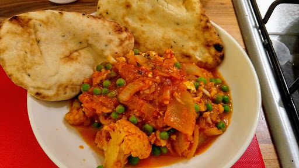

Cauliflower, paneer & pea curry
Ready in less than an hour, this easy, vegetarian curry recipe made with pan-fried Indian cheese and vegetables is also cheap to prepare.
Ingredients
- 2 tbsp sunflower oil
- 225 g pack paneer, cut into cubes
- 1 head of cauliflower, broken into small florets
- 2 onions, thickly sliced
- 2 garlic cloves, crushed
- 2 heaped tbsp tikka masala paste
- 500 g carton passata
- 200 g frozen peas
- small pack coriander, roughly chopped
- basmati rice or naan breads, to serve
- raita or your favourite chutney, to serve
Instructions
- Heat 1 tbsp of oil in a large non-stick frying pan, add the paneer and fry gently until crisp. Remove with a slotted spoon and set aside. Add the remaining oil and the cauliflower to the pan, and cook for 10 mins until browned. Add the onions, and a little more oil if needed, and cook for a further 5 mins until softened. Stir in the garlic and curry paste, then pour in the passata and 250ml water, and season. Bring to a simmer, then cover and cook for 18-20 mins or until the cauliflower is just tender.
- Add the frozen peas and crispy paneer to the pan and cook for a further 5 mins. Stir through most of the coriander and garnish with the rest. Serve with basmati rice or naan bread, raita or your favourite chutney.
Source
www.bbcgoodfood.comShort URL